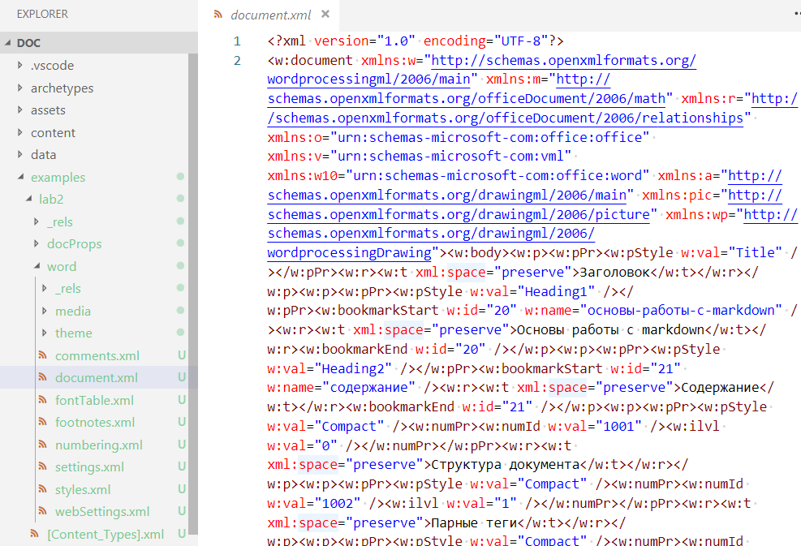
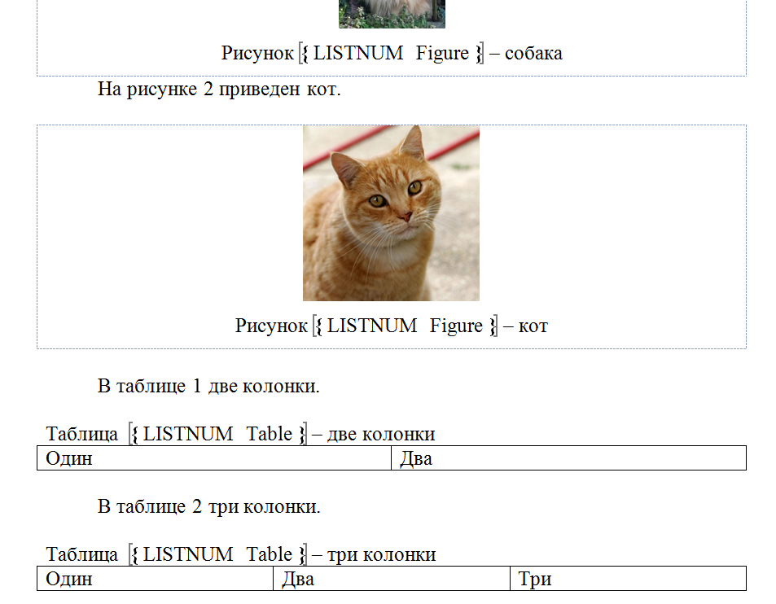
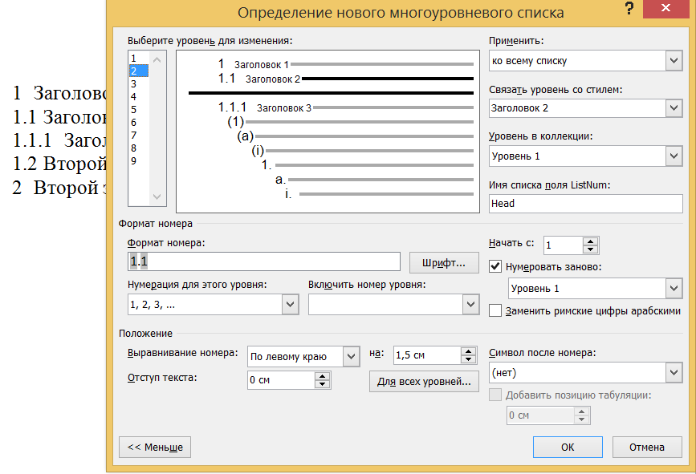
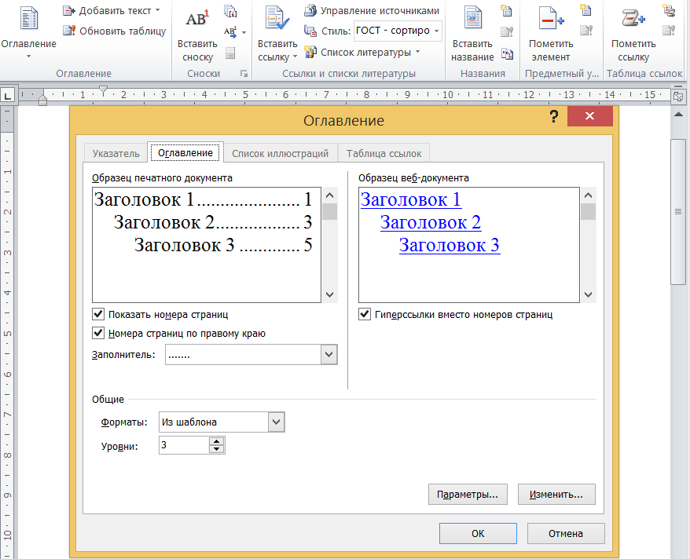

<!doctype html>
<html>
	<head>
		<meta charset="utf-8">
		<meta name="viewport" content="width=device-width, initial-scale=1.0, maximum-scale=1.0, user-scalable=no">

		<title>Текстовые процессоры</title>

		<link rel="stylesheet" href="../dist/reset.css">
		<link rel="stylesheet" href="../dist/reveal.css">
		<link rel="stylesheet" href="../dist/theme/beige.css" id="theme">

		<!-- Theme used for syntax highlighted code -->
		<link rel="stylesheet" href="../plugin/highlight/github.css" id="highlight-theme">
	</head>
	<body>
		<div class="reveal">
			<div class="slides">

                <section data-markdown data-separator="----" data-separator-vertical="---" > 
<script type="text/template">

## Формат DOCX

---

### PANDOC

[pandoc](https://pandoc.org/) — универсальный конвертор текстовых форматов.

```
c:\prog\pandoc\pandoc -o lab2.docx lab2.md
```

Стили:

- Заголовок X — HeadingX;
- Обычный текст — Normal и First Paragraph;
- ... .

---

### Шаблон WORD для Pandoc

Создание шаблона:

```
pandoc -o custom-reference.docx 
        --print-default-data-file reference.docx
```

С использованием шаблона:

```
pandoc -o lab2.docx lab2.md 
        --reference-doc=reference.docx
```

---

### Распаковка WORD


---

### Структура DOCX



----

## Поля Word

---

### Типы полей


---

### Типы полей 2


---

### Поле ListNum



---

### Поле REF


----

## Списки и счетчики

---

### Многоуровневый список WORD



---

### Ссылки WORD



---

### Счетчики HTML


```
  <style>
   li { list-style-type: none; } /* Убираем исходную нумерацию у списка */
   ol { counter-reset: list1; } /* Инициируем счетчик */
   ol li:before {
    counter-increment: list1; /* Увеличиваем значение счетчика */
    content: counter(list1) ". "; /* Выводим число */
   }
   ol ol { counter-reset: list2; } /* Инициируем счетчик вложенного списка */
   ol ol li:before {
    counter-increment: list2; /* Увеличиваем значение счетчика вложенного списка */
    content: counter(list1) "." counter(list2) ". "; /* Выводим число */
   }
  </style>
```
[https://webref.ru/css/counter-reset](https://webref.ru/css/counter-reset)

---

### Перечни HTML и markdown

Для перечней используются редакторы или системы сборки.

Например, расширение «Markdown All in One»:


</script>
                </section>

			</div>
		</div>

		<script src="../dist/reveal.js"></script>
		<script src="../plugin/notes/notes.js"></script>
		<script src="../plugin/markdown/markdown.js"></script>
		<script src="../plugin/highlight/highlight.js"></script>
		<script src="../plugin/audio-slideshow/plugin.js"></script>
		<script src="../plugin/audio-slideshow/recorder.js"></script>
		<script src="../plugin/audio-slideshow/RecordRTC.js"></script>
		<script src="../plugin/menu/menu.js"></script>
		<script>
			Reveal.initialize({
				hash: true,
				plugins: [ RevealMarkdown, RevealHighlight, RevealNotes, RevealAudioSlideshow, RevealAudioRecorder, RevealMenu ],
				audio: {
					prefix: 'audio/',
 					suffix: '.webm;codecs=opus',
					autoplay: false,
					advance: -1,
				},
				menu: {
					custom: [{
						title: 'Home',
						icon: '<i class="fa fa-home">',
						src: '../menu.html'
					}]
				}
			});
		</script>
	</body>
</html>
